Pragmatic optimization
In modern programming
Demystifying a compiler
Created by Marina (geek) Kolpakova for UNN / 2015-2016
Course Topics
- Pragmatics
- Ordering optimization approaches
- Demystifying a compiler
- Mastering compiler optimizations
Outline
- Compilation trajectory
- Intermediate language
- Dealing with local variables
- link-time and whole program optimization
- Optimization levels
- Compiler optimization taxonomies
- Classic
- Scope
- Code pattern
- How to get the feedback from optimization?
- Compiler optimization challenges
- Summary
Executable generation phases
- Pre-processing. Pre-process, but don't compile.
gcc -E test.cccl /E test.cc
- Compilation. Compile, but don't assemble.
gcc -S test.cccl /FA test.cc
- Assembling. Assemble, but don't link.
gcc -c test.cccl /c test.cc
- Linking. Link object files to generate the executable.
gcc test.cccl test.cc
Compilation trajectory
- Lexical Analysis
- scans the source code as a stream of characters converting it into lexemes (tokens).
- Syntax Analysis
- takes the tokens, produced by lexical analysis, as input and generates a syntax tree. Source code grammar (syntactical correctness) is checked here.
Compilation trajectory
- Semantic Analysis
- checks whether the constructed syntax tree follows the language rules (including the type checking).
- Intermediate Code Generation
- builds a program representation for some abstract machine. It is in between the high-level language and the target machine language.
Compilation trajectory
- Code Optimization
- does optimization of the intermediate code (eg, redundancy elimination).
- Code Generation
- takes an optimized representation of the intermediate code and maps it to the target machine language.
Frontend and backend
- Only a backend is required for new machine support
- Only a frontend is required for new language support
- Most of optimizations resemble each other for all targets and could be applied in between frontend and backend
Intermediate language
Optimization techniques become much easier to conduct on the level of intermediate code. Modern compilers usually use 2 levels of intermediate representation (IR).
Intermediate language
- High Level IR
- is close to the source and can be easily generated from the source code. Some code optimizations are possible. It is not very suitable for target machine optimization.
- Low Level IR
- is close to the target machine and used for machine-dependent optimizations: register allocation, instruction selection, peephole optimization.
Intermediate language
- Language-specific to be used for JIT compilation later:
- Java byte code; .NET CLI, NVIDIA PTX.
- Language independent, like three-(four-)address code (similar to a classic RISC ISA).
a = b + c * d + c * d;Three-Address Code (TAC)
r1 = c * d;
r2 = b + r1;
r3 = r2 + r1;
a = r3Here rth is an abstract register.
Three-Address Code
- Quadruples has four fields
Op arg1 arg2 result * c d r1 + b r1 r2 + r2 r1 r3 = r3 a - Triples or Indirect triples have three fields
Op arg1 arg2 * c d + b (0) + (1) (0) = (2)
Intermediate language
Provides frontend independent code representation.
Intermediate language
uint32_t gray2rgba_v1(uint8_t c)
{
return c + (c<<8) + (c<<16) + (c<<24);
}$ cat test.ll
define i32 @gray2rgba_v1(i8 zeroext %c) #0 {
%1 = zext i8 %c to i32
%2 = mul i32 %1, 16843009
ret i32 %2
}gray2rgba_v1:
movzbl %dil, %eax
imull $16843009, %eax, %eax
retDealing Local variables
Compiler don't care how many variables are used in code, register allocation is done after IR rotations.
for( ; j <= roi.width - 4; j += 4 )
{
uchar t0 = tab[src[j]];
uchar t1 = tab[src[j+1]];
dst[j] = t0;
dst[j+1] = t1;
t0 = tab[src[j+2]];
t1 = tab[src[j+3]];
dst[j+2] = t0;
dst[j+3] = t1;
}Dealing Local variables
.lr.ph4: ; preds = %0, %.lr.ph4
%indvars.iv5 = phi i64 [ %indvars.iv.next6, %.lr.ph4 ], [ 0, %0 ]
%6 = getelementptr inbounds i8* %src, i64 %indvars.iv5
%7 = load i8* %6, align 1, !tbaa !1
%8 = zext i8 %7 to i64
%9 = getelementptr inbounds i8* %tab, i64 %8
%10 = load i8* %9, align 1, !tbaa !1
%11 = or i64 %indvars.iv5, 1
%12 = getelementptr inbounds i8* %src, i64 %11
%13 = load i8* %12, align 1, !tbaa !1
%14 = zext i8 %13 to i64
%15 = getelementptr inbounds i8* %tab, i64 %14
%16 = load i8* %15, align 1, !tbaa !1
%17 = getelementptr inbounds i8* %dst, i64 %indvars.iv5
store i8 %10, i8* %17, align 1, !tbaa !1
%18 = getelementptr inbounds i8* %dst, i64 %11
store i8 %16, i8* %18, align 1, !tbaa !1
%19 = or i64 %indvars.iv5, 2
// ...
%28 = zext i8 %27 to i64
%29 = getelementptr inbounds i8* %tab, i64 %28
%30 = load i8* %29, align 1, !tbaa !1
%31 = getelementptr inbounds i8* %dst, i64 %19
store i8 %24, i8* %31, align 1, !tbaa !1
%32 = getelementptr inbounds i8* %dst, i64 %25
store i8 %30, i8* %32, align 1, !tbaa !1
%indvars.iv.next6 = add nuw nsw i64 %indvars.iv5, 4
%33 = trunc i64 %indvars.iv.next6 to i32
%34 = icmp sgt i32 %33, %1
br i1 %34, label %..preheader_crit_edge, label %.lr.ph4
Link-Time Optimization (LTO)
Perform inter-procedural optimizations during linking.  Most compilers support this feature:WHOPR: Whole program optimization
- Compile each source file separately, add extra information to the object file
- Analyze information collected from all object files
- Perform second optimization phase to generate object file
- Link the final binary
- Eliminate even more redundant code
- Compilations is better optimized for multi-core systems
Optimization levels
- -O0 (the default) No optimization
- generates unoptimized code but has the fastest compilation time.
- -O1 Moderate optimization
- optimizes reasonably well but does not degrade compilation time significantly.
- -O2 Full optimization
- generates highly optimized code and has the slowest compilation time.
Optimization levels
- -O3 Aggressive optimization
- employees more aggressive automatic inlining of subprograms within a unit and attempts to vectorize.
- -Os Optimizes with focus on program size
- enables all
-O2optimizations that do not typically increase code size. It also performs further optimizations designed to reduce code size.
enabled optimizations: GCC -O0
GNU C version 4.9.2 (x86_64-linux-gnu)
$ touch 1.c; gcc -O0 -S -fverbose-asm 1.c -o 1.s
options enabled: -faggressive-loop-optimizations -fasynchronous-unwind-tables -fauto-inc-dec -fcommon -fdelete-null-pointer-checks -fdwarf2-cfi-asm -fearly-inlining -feliminate-unused-debug-types -ffunction-cse -fgcse-lm -fgnu-runtime -fgnu-unique -fident -finline-atomics -fira-hoist-pressure -fira-share-save-slots -fira-share-spill-slots -fivopts -fkeep-static-consts -fleading-underscore -fmath-errno -fmerge-debug-strings -fpeephole -fprefetch-loop-arrays -freg-struct-return -fsched-critical-path-heuristic -fsched-dep-count-heuristic -fsched-group-heuristic -fsched-interblock -fsched-last-insn-heuristic -fsched-rank-heuristic -fsched-spec -fsched-spec-insn-heuristic -fsched-stalled-insns-dep -fshow-column -fsigned-zeros -fsplit-ivs-in-unroller -fstack-protector -fstrict-volatile-bitfields -fsync-libcalls -ftrapping-math -ftree-coalesce-vars -ftree-cselim -ftree-forwprop -ftree-loop-if-convert -ftree-loop-im -ftree-loop-ivcanon -ftree-loop-optimize -ftree-parallelize-loops= -ftree-phiprop -ftree-reassoc -ftree-scev-cprop -funit-at-a-time -funwind-tables -fverbose-asm -fzero-initialized-in-bss -m128bit-long-double -m64 -m80387 -malign-stringops -mavx256-split-unaligned-load -mavx256-split-unaligned-store -mfancy-math-387 -mfp-ret-in-387 -mfxsr -mglibc -mieee-fp -mlong-double-80 -mmmx -mno-sse4 -mpush-args -mred-zone -msse -msse2 -mtls-direct-seg-refs
enabled optimizations: GCC -O1
GNU C version 4.9.2 (x86_64-linux-gnu)
$ touch 1.c; gcc -O0 -S -fverbose-asm 1.c -o 1.s
options enabled: -faggressive-loop-optimizations -fasynchronous-unwind-tables -fauto-inc-dec -fbranch-count-reg -fcombine-stack-adjustments -fcommon -fcompare-elim -fcprop-registers -fdefer-pop -fdelete-null-pointer-checks -fdwarf2-cfi-asm -fearly-inlining -feliminate-unused-debug-types -fforward-propagate -ffunction-cse -fgcse-lm -fgnu-runtime -fgnu-unique -fguess-branch-probability -fident -fif-conversion -fif-conversion2 -finline -finline-atomics -finline-functions-called-once -fipa-profile -fipa-pure-const -fipa-reference -fira-hoist-pressure -fira-share-save-slots -fira-share-spill-slots -fivopts -fkeep-static-consts -fleading-underscore -fmath-errno -fmerge-constants -fmerge-debug-strings -fmove-loop-invariants -fomit-frame-pointer -fpeephole -fprefetch-loop-arrays -freg-struct-return -fsched-critical-path-heuristic -fsched-dep-count-heuristic -fsched-group-heuristic -fsched-interblock -fsched-last-insn-heuristic -fsched-rank-heuristic -fsched-spec -fsched-spec-insn-heuristic -fsched-stalled-insns-dep -fshow-column -fshrink-wrap -fsigned-zeros -fsplit-ivs-in-unroller -fsplit-wide-types -fstack-protector -fstrict-volatile-bitfields -fsync-libcalls -ftoplevel-reorder -ftrapping-math -ftree-bit-ccp -ftree-ccp -ftree-ch -ftree-coalesce-vars -ftree-copy-prop -ftree-copyrename -ftree-cselim -ftree-dce -ftree-dominator-opts -ftree-dse -ftree-forwprop -ftree-fre -ftree-loop-if-convert -ftree-loop-im -ftree-loop-ivcanon -ftree-loop-optimize -ftree-parallelize-loops= -ftree-phiprop -ftree-pta -ftree-reassoc -ftree-scev-cprop -ftree-sink -ftree-slsr -ftree-sra -ftree-ter -funit-at-a-time -funwind-tables -fverbose-asm -fzero-initialized-in-bss -m128bit-long-double -m64 -m80387 -malign-stringops -mavx256-split-unaligned-load -mavx256-split-unaligned-store -mfancy-math-387 -mfp-ret-in-387 -mfxsr -mglibc -mieee-fp -mlong-double-80 -mmmx -mno-sse4 -mpush-args -mred-zone -msse -msse2 -mtls-direct-seg-refs
enabled optimizations: GCC -O2
GNU C version 4.9.2 (x86_64-linux-gnu)
$ touch 1.c; gcc -O0 -S -fverbose-asm 1.c -o 1.s
options enabled: -faggressive-loop-optimizations -fasynchronous-unwind-tables -fauto-inc-dec -fbranch-count-reg -fcaller-saves -fcombine-stack-adjustments -fcommon -fcompare-elim -fcprop-registers -fcse-follow-jumps -fdefer-pop -fdelete-null-pointer-checks -fdevirtualize -fdevirtualize-speculatively -fdwarf2-cfi-asm -fearly-inlining -feliminate-unused-debug-types -fexpensive-optimizations -fforward-propagate -ffunction-cse -fgcse -fgcse-lm -fgnu-runtime -fgnu-unique -fguess-branch-probability -fhoist-adjacent-loads -fident -fif-conversion -fif-conversion2 -findirect-inlining -finline -finline-atomics -finline-functions-called-once -finline-small-functions -fipa-cp -fipa-profile -fipa-pure-const -fipa-reference -fipa-sra -fira-hoist-pressure -fira-share-save-slots -fira-share-spill-slots -fisolate-erroneous-paths-dereference -fivopts -fkeep-static-consts -fleading-underscore -fmath-errno -fmerge-constants -fmerge-debug-strings -fmove-loop-invariants -fomit-frame-pointer -foptimize-sibling-calls -foptimize-strlen -fpartial-inlining -fpeephole -fpeephole2 -fprefetch-loop-arrays -free -freg-struct-return -freorder-blocks -freorder-blocks-and-partition -freorder-functions -frerun-cse-after-loop -fsched-critical-path-heuristic -fsched-dep-count-heuristic -fsched-group-heuristic -fsched-interblock -fsched-last-insn-heuristic -fsched-rank-heuristic -fsched-spec -fsched-spec-insn-heuristic -fsched-stalled-insns-dep -fschedule-insns2 -fshow-column -fshrink-wrap -fsigned-zeros -fsplit-ivs-in-unroller -fsplit-wide-types -fstack-protector -fstrict-aliasing -fstrict-overflow -fstrict-volatile-bitfields -fsync-libcalls -fthread-jumps -ftoplevel-reorder -ftrapping-math -ftree-bit-ccp -ftree-builtin-call-dce -ftree-ccp -ftree-ch -ftree-coalesce-vars -ftree-copy-prop -ftree-copyrename -ftree-cselim -ftree-dce -ftree-dominator-opts -ftree-dse -ftree-forwprop -ftree-fre -ftree-loop-if-convert -ftree-loop-im -ftree-loop-ivcanon -ftree-loop-optimize -ftree-parallelize-loops= -ftree-phiprop -ftree-pre -ftree-pta -ftree-reassoc -ftree-scev-cprop -ftree-sink -ftree-slsr -ftree-sra -ftree-switch-conversion -ftree-tail-merge -ftree-ter -ftree-vrp -funit-at-a-time -funwind-tables -fverbose-asm -fzero-initialized-in-bss -m128bit-long-double -m64 -m80387 -malign-stringops -mavx256-split-unaligned-load -mavx256-split-unaligned-store -mfancy-math-387 -mfp-ret-in-387 -mfxsr -mglibc -mieee-fp -mlong-double-80 -mmmx -mno-sse4 -mpush-args -mred-zone -msse -msse2 -mtls-direct-seg-refs -mvzeroupper
enabled optimizations: GCC -O3
GNU C version 4.9.2 (x86_64-linux-gnu)
$ touch 1.c; gcc -O0 -S -fverbose-asm 1.c -o 1.s
options enabled: -faggressive-loop-optimizations -fasynchronous-unwind-tables -fauto-inc-dec -fbranch-count-reg -fcaller-saves -fcombine-stack-adjustments -fcommon -fcompare-elim -fcprop-registers -fcrossjumping -fcse-follow-jumps -fdefer-pop -fdelete-null-pointer-checks -fdevirtualize -fdevirtualize-speculatively -fdwarf2-cfi-asm -fearly-inlining -feliminate-unused-debug-types -fexpensive-optimizations -fforward-propagate -ffunction-cse -fgcse -fgcse-after-reload -fgcse-lm -fgnu-runtime -fgnu-unique -fguess-branch-probability -fhoist-adjacent-loads -fident -fif-conversion -fif-conversion2 -findirect-inlining -finline -finline-atomics -finline-functions -finline-functions-called-once -finline-small-functions -fipa-cp -fipa-cp-clone -fipa-profile -fipa-pure-const -fipa-reference -fipa-sra -fira-hoist-pressure -fira-share-save-slots -fira-share-spill-slots -fisolate-erroneous-paths-dereference -fivopts -fkeep-static-consts -fleading-underscore -fmath-errno -fmerge-constants -fmerge-debug-strings -fmove-loop-invariants -fomit-frame-pointer -foptimize-sibling-calls -foptimize-strlen -fpartial-inlining -fpeephole -fpeephole2 -fpredictive-commoning -fprefetch-loop-arrays -free -freg-struct-return -freorder-blocks -freorder-blocks-and-partition -freorder-functions -frerun-cse-after-loop -fsched-critical-path-heuristic -fsched-dep-count-heuristic -fsched-group-heuristic -fsched-interblock -fsched-last-insn-heuristic -fsched-rank-heuristic -fsched-spec -fsched-spec-insn-heuristic -fsched-stalled-insns-dep -fschedule-insns2 -fshow-column -fshrink-wrap -fsigned-zeros -fsplit-ivs-in-unroller -fsplit-wide-types -fstack-protector -fstrict-aliasing -fstrict-overflow -fstrict-volatile-bitfields -fsync-libcalls -fthread-jumps -ftoplevel-reorder -ftrapping-math -ftree-bit-ccp -ftree-builtin-call-dce -ftree-ccp -ftree-ch -ftree-coalesce-vars -ftree-copy-prop -ftree-copyrename -ftree-cselim -ftree-dce -ftree-dominator-opts -ftree-dse -ftree-forwprop -ftree-fre -ftree-loop-distribute-patterns -ftree-loop-if-convert -ftree-loop-im -ftree-loop-ivcanon -ftree-loop-optimize -ftree-loop-vectorize -ftree-parallelize-loops= -ftree-partial-pre -ftree-phiprop -ftree-pre -ftree-pta -ftree-reassoc -ftree-scev-cprop -ftree-sink -ftree-slp-vectorize -ftree-slsr -ftree-sra -ftree-switch-conversion -ftree-tail-merge -ftree-ter -ftree-vrp -funit-at-a-time -funswitch-loops -funwind-tables -fverbose-asm -fzero-initialized-in-bss -m128bit-long-double -m64 -m80387 -malign-stringops -mavx256-split-unaligned-load -mavx256-split-unaligned-store -mfancy-math-387 -mfp-ret-in-387 -mfxsr -mglibc -mieee-fp -mlong-double-80 -mmmx -mno-sse4 -mpush-args -mred-zone -msse -msse2 -mtls-direct-seg-refs -mvzeroupper
Classic compiler optimization taxonomy
Machine independent
Applicable across a broad range of machines
|
Machine dependent
Capitalize on specific machine properties
|
Scope compiler optimization taxonomy
- Interprocedural optimizations
- consider the whole translation unit, involve analysis of dataflow and dependency graphs.
- Intraprocedural optimizations
- consider the whole procedure, involve analysis of dataflow and dependency graphs.
Scope compiler optimization taxonomy
- Global optimizations
- consider the inter-most code block with the context. Loop optimizations belong to this.
- Local optimizations
- consider a single block, the analysis is limited to it.
- Peephole optimizations
- map one or more consecutive operators from the IR to a machine code.
Interprocedural optimizations (IPO)
Look at all routines in a translation unit in order to make optimizations across routine boundaries, including but not limited to inlining and cloning.
Also called as Interprocedural Analysis (IPA).
- Compiler can move, optimize, restructure and delete code between procedures
- and even different source files, if LTO is enabled
- Inlining — replacing a subroutine call with the replicated code of it
- Cloning — optimizing logic in the copied subroutine for a particular call
Pattern compiler optimization taxonomy
- Dependency chains (linear code)
- Branches
- Loop bodies
- Single loop
- Loop and branch
- Multi-loop
- Functional calls to subroutines
How to get optimization feedback?
- Check wall-time of you application
- If a compiler has done its job well, you'll see performance improvements
- Dump an assembly of your code (or/and IL)
- Ensure instruction and register scheduling
- Check for extra operations and register spills
- See compiler optimization report
- All the compilers have some support for it
- Some of them are able to generate very detailed reports about loop unrolling, auto-vectorization, VLIW slots scheduling, etc
Commonly considered metrics
- Wall(-clock) time
- is a human perception of the span of time from the start to the completion of a task.
- Power consumption
- is the electrical energy which is consumed to complete a task.
- Processor time (or runtime)
- is the total execution time during which a processor was dedicated to a task (i.e. executes instructions of that task).
Dumping Assembly
Assembler is a must-have to check the compiler$ gcc code.c -S -o asm.s
but it is rarely used to write low-level code.
- Assembly writing is the least portable optimization
- Inline assembly limits compiler optimizations
- Assembly does not give overwhelming speedup nowadays
- Sometimes it is needed to overcome compiler bugs and optimization limitations
Example: GCC feedback options
- Enables optimization information printing
-fopt-info-fopt-info-<optimized/missed/note/all>-fopt-info-all-<ipa/loop/inline/vec/optall>-fopt-info=filename
- Controls the amount of debugging output the scheduler prints on targets
that use instruction scheduling
-fopt-info -fsched-verbose=n
- Controls the amount of output from auto-vectorizer
-ftree-vectorizer-verbose=n
Examples: GCC feedback options
- Outputs all optimization info to stderr.
gcc -O3 -fopt-info
- Outputs missed optimization report from all the passes to missed.txt
gcc -O3 -fopt-info-missed=missed.txt
- Outputs information about missed optimizations as well as optimized locations from all the inlining
passes to inline.txt.
gcc -O3 -fopt-info-inline-optimized-missed=inline.txt
GCC feedback example
./src/box.cc:193:9: note: loop vectorized ./src/box.cc:193:9: note: loop versioned for vectorization because of possible aliasing ./src/box.cc:193:9: note: loop peeled for vectorization to enhance alignment ./src/box.cc:96:9: note: loop vectorized ./src/box.cc:96:9: note: loop peeled for vectorization to enhance alignment ./src/box.cc:51:9: note: loop vectorized ./src/box.cc:51:9: note: loop peeled for vectorization to enhance alignment ./src/box.cc:193:9: note: loop with 7 iterations completely unrolled ./src/box.cc:32:13: note: loop with 7 iterations completely unrolled ./src/box.cc:96:9: note: loop with 15 iterations completely unrolled ./src/box.cc:51:9: note: loop with 15 iterations completely unrolled ./src/box.cc:584:9: note: loop vectorized ./src/box.cc:584:9: note: loop versioned for vectorization because of possible aliasing ./src/box.cc:584:9: note: loop peeled for vectorization to enhance alignment ./src/box.cc:482:9: note: loop vectorized ./src/box.cc:482:9: note: loop peeled for vectorization to enhance alignment ./src/box.cc:463:5: note: loop vectorized ./src/box.cc:463:5: note: loop versioned for vectorization because of possible aliasing ./src/box.cc:463:5: note: loop peeled for vectorization to enhance alignment
Pointer aliasing
void twiddle1(int *xp, int *yp)
{
*xp += *yp;
*xp += *yp;
}void twiddle2(int *xp, int *yp)
{
*xp += 2* *yp;
}Are they always equal?
Pointer aliasing
What if..
int main(int argc, char** argv)
{
int i = 5, j = 5;
twiddle1(&i, &i);
twiddle2(&j, &j);
printf("twiddle1 result is %d\n", i);
printf("twiddle2 result is %d\n", j);
}twiddle1 result is 20 while twiddle2 result is 15
Pointer aliasing
Aliasing refers to the situation where the same memory location can be accessed by using different names.
void twiddle1(int *xp, int *yp)
{
*xp += *yp;
*xp += *yp;
}void twiddle2(int *xp, int *yp)
{
*xp += 2* *yp;
}Strict aliasing assumption
Strict aliasing is an assumption, made by a C (or C++) compiler, that dereferencing pointers to objects of different types will never refer to the same memory location.
This assumption enables more aggressive optimization (gcc assumes it up from -02), but a programmer should have to follow strict aliasing rules to get code working correctly.
Strict aliasing assumption
void check(int32_t *h, int64_t *k)
{
*h = 5; *k = 6;
printf("%d\n", *h);
}
void main()
{
int64_t k;
check((int32_t *)&k, &k);
}gcc -O2 test.c -o test ; ./test results in 5
Pointer aliasing: missed opportunities
- Compiler freely schedules arithmetic,
but often preserves the order of memory dereferencing - Compiler is limited in redundancy elimination
- Compiler is limited in loop unrolling
- Compiler is limited in auto-vectorization
Function calls
int callee();
int caller()
{
return callee() + callee();
}int callee();
int caller()
{
return 2*callee();
}Are they equal?
Function calls
|
|
Are they equal?
Pure functions
Pure function is a function for which both of the following statements are true:
- The function always evaluates the same result having been given the same argument value(s). The function result must not depend on any hidden information or state that may change while program execution proceeds or between different executions of the program, as well as on any external input from I/O devices.
- Evaluation of the result does not cause any semantically observable side effect or output, such as mutation of mutable objects or output to I/O devices.
Pure functions
- Pure functions are much easier to optimize. Expressing ideas in code as pure functions simplifies compiler's life.
- Most functions from math.h are not pure (sets/cleans floating point flags and conditions, throws floating point exceptions)
- Use constexpr keyword for c++11 to hint a compiler that function could be evaluated in compile time
- Use static keyword to help the compiler to see all the usages of the function (and perform aggressive inlining, or even deduce whether the function is pure or not)
- Neither constexpr nor static doesn't guarantee that function is pure but they give compiler some hints.
Functional calls: missed opportunities
If the compiler fails to inline a function body:
- it is limited in redundancy elimination
- there are some overhead on function calls
- inlining is crucial for functional calls from loops
- many other optimizations aren't performed for this fragment of code
- loop unrolling
- auto-vectorization
- etc
- potential bloating of code and stack
Floating point
- Floating point arithmetics is not associative,
so A+(B+C) != (A+B)+C - A compiler is very conservative about floating point!
void associativityCheck (void)
{
double x = 3.1415926535897931;
double a = 1.0e15;
double b = -(1.0e15 - 1.0);
printf("%f %f\n", x*(a + b), x*a + x*b );
}$ gcc check.c -o check ; ./check
3.141593 3.000000
Such situation is known as catastrophic cancellation
More optimization challenges
- Branches inside a loop
- Exceptions
- Accesses to storage type global variables
- Inline assembly
volatilekeyword
Summary
- Source code does through lexical, syntax, semantic analysis, as well as IR generation, optimization before producing target machine code
- Backend and frontend simplify compiler development
- Intermediate language makes compiler optimizations reusable across broad range of languages and targets
- IL can be Language-specific or Language independent
- Triples and Quadruples are widely used as
language-independent IR - All the compiler optimizations are done on IR
- Register allocation goes after IR optimization,
local-variable reuse is pointless nowadays!
Summary
- LTO allows do optimizations during linking
- WHOPR allows globally optimize whole binary
- Compiler usually supports multiple optimization levels
- Compiler optimizations are split into machine-dependent and machine-independent groups
- By scope compiler optimizations are split into interprocedural, intraprocedural, global, local and peephole
- The most common targets are dependency chains, branches, loops
- Compiler optimization is a multi-phase iterative process
- Performing one optimization allows many other
- Most optimizations need certain order of application
Summary
- Checking wall-time, assembly or optimizer's report are the most common ways to get optimization feedback
- Wall time is the most important metric to optimize
- Assembler is a must-have to check the compiler
but it is rarely used to write low-level code - Inspect optimizer's report to demystify its "habits"
- Stick to the strict aliasing rule
- Clean code is not enough.. Write pure code!
- Compilers are usually very conservative
optimizing floating point math
THE END